Agri-Connect Tanzania
About us
About Us
OUR CORE VALUES
Commitment; Respect; Transparency; Accountability; Integrity; Innovation; Creativity; Teamwork; Volunteerism; Quality; Environment Friendly; Result Focus; Cooperation; Help each other; Togetherness; Love;
If you want to learn more about us, you're in the right place. Read to learn how our project have kept developing from small humble stage as just a simple idea posted on facebook page to an NGO which supports millions of people in need particularly Youths.
Our story

Agnes Edward Link
NGO Founder
A dedicated and highly committed, enthusiastic MBA graduate specializing in International Business. I have graduated Master’s in Business Administration (MBA), Master’s in International Hospitality &Tourism Management and BA in Sociology. I am an excellent team player who has a mature and flexible approach to work, with strong IT, interpersonal skills and the ability to communicate and negotiate concisely at all levels. I enjoy being part of a team and thrive in new and challenging working environments. Highly organized, self-motivated individual with the ability to develop, creative and solutions to problems with good analytical skills.
I seek to use my professional expertise to focus more on enhancing community development; through involving poverty reduction/eradication strategies; but strictly focusing on areas that engages the community directly.
There millions of people in didfferent groups who are not yet reached. why starting with youth? I believe so much on the young generation who carries not only visions but also they are full of energy. This is the reson why my first practical acting towards Community Development has started with the young group.
As a community development pioneers my focus is on three things which never be left behind on whatever I tend to do:
- Agriculture: As a farmer, Entrepreneur and Consultant from a farming background, it is my plan to invest in farming, whereby I can have big farms producing food. This will contribute to the community development because it will provide employment to the youth who can be either educated or less educated but able to understand farming practices when trained. I will train farmers who will work for me and those who will use the knowledge to farm on their own. Majority of Tanzanian are engaged more in Agriculture sector than to other sectors. Therefore, there is need to be done in helping Tanzanians from living poverty, by putting more effort in agriculture sector. It is my target to enhance community development by supporting or working with different groups particularly young people.
- Tourism: As a consultant, where there is chances:
I will like to support destinations to maintain their competitive, innovative and sustainability in the industry and in their contribution towards poverty reduction, by providing technical and strategic consultancies in the area of tourism and natural resources management. This will touch directly environmental conservation which will also be practiced on agriculture side. Tourism can build a more sustainable future for a nation and its people, so it shouldn't be left behind when planning for community development and expecially when focusing on poverty reduction/eradication.
- Gender issues & youth development: As a Consultant/Counselor/Mentor, I seek to use my professional expertise to enhance the global community development by focusing on Gender issues, particularly cultural, economic and legal gender inequalities, which I believe are critical underlying factor in making progress in all development sectors in any community. I aim to support efforts done by different donors and institutions to operationalize gender equality, female empowerment and youth with serious addictions by providing technical and strategic consultancies aiming to bring total recovering. Agnes’s model for community development, is being applied to reach those who are not yet reached. This involve any process that proves to support our mission for mindset changing, capacity building and material provision. On mindset changing processes like mental and spiritual consultancies that will involve counceling and reformation process is being considered accordingly.
agri-Connect Team-Northern Zone
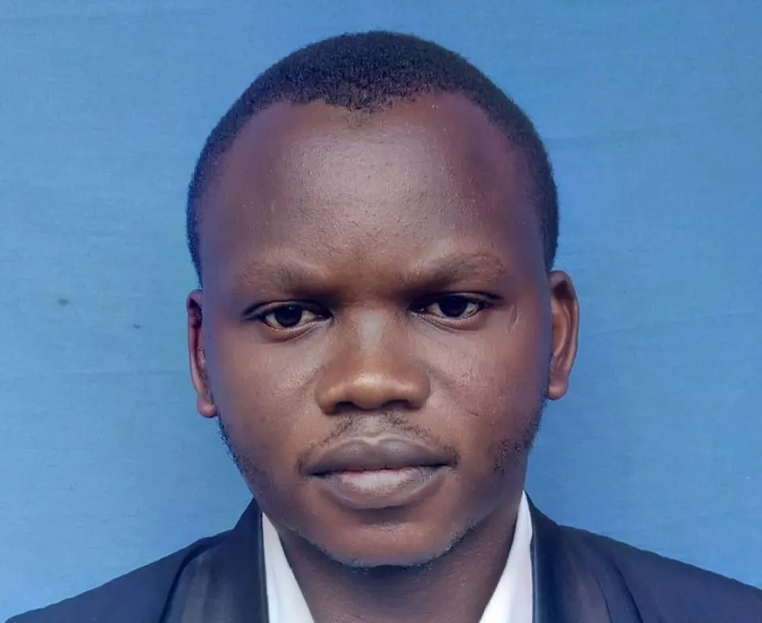
Faraja James Ngomuo
A-CT Team and NGO Acting Chief Secretary
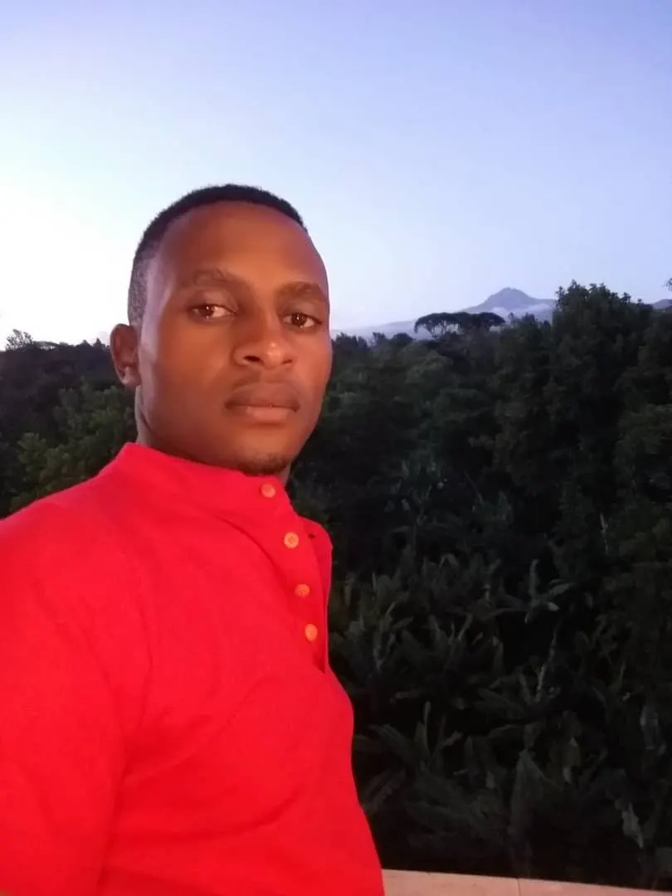
Sifuel Elimbinzi Nyaki
A-CT Team and NGO's Driver
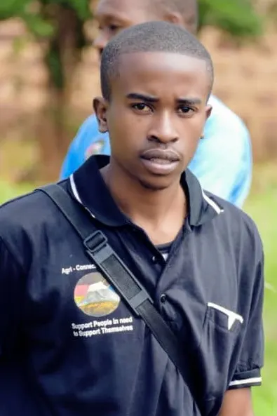
Said Mbegu
A-CT Team and NGO's news Presenter & Camera man
Agnes Link
A-CT Team and NGO's Managing Director
Williams Mathias Bunzil
A-CT Team and NGO ACTING ACCOUNTANT
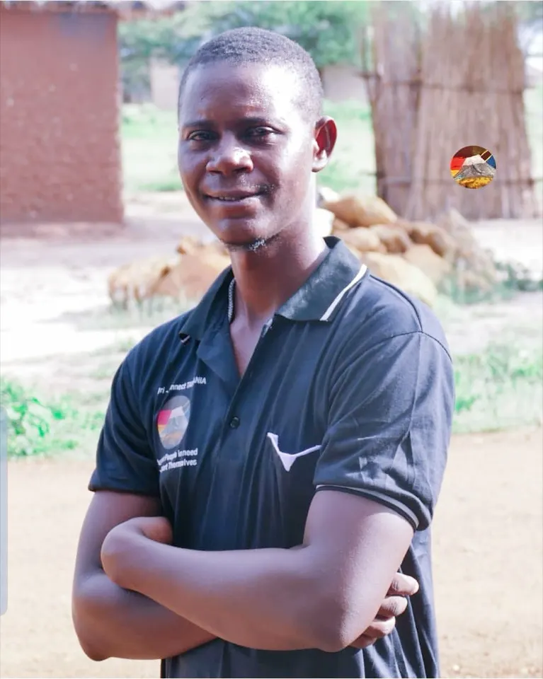
Emanuel Livingston Temba
A-CT Team and Youth Group organizers & Ambassador
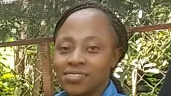
Maria Mallyi
A-CT Team and Youths Ambassador
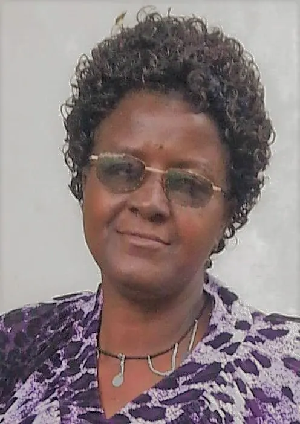
Mama Hortenzia Kundi
A-CT Team Guardian, Advisor & Role model
Constancia Alfred Lekule
A-CT Team and Youths groups Organizer & Ambassador
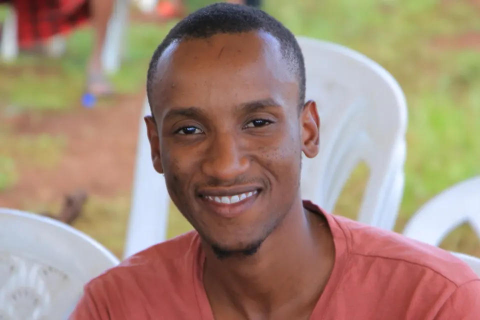
Jaylan Kilonzo
A-CT Team and NGO's Journalist & Camera man
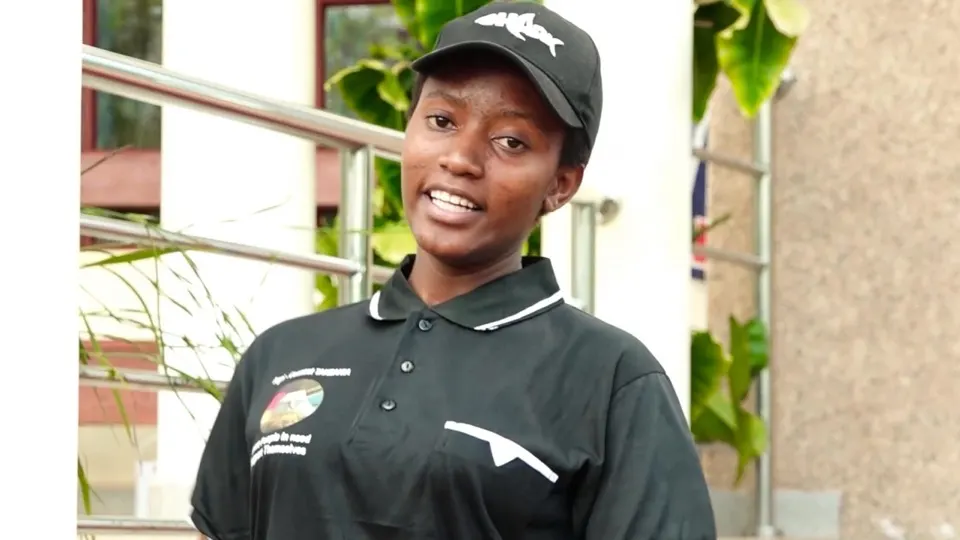
Hosiana Godfrey Msuya
A-CT Team and Youth Ambassador
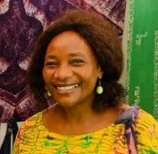
Mama Janeth Shoo
A-CT Team Guardian, Advisor & Role model
The Land expected to be headquoters of Agri-Connect Tanzania
The vision sees many lives being transformed from one stage to another; from saying I can`t to I can, from believing impossibles to possible, from being negative to positive. In considering its efficience in bringing lives to all these and more, there must be a serious transformation process to some lives, so the Founder of the NGO has decided to use her personal property (Land) as a place for the transformation centre. It is also in the same land the Agri-Connect Tanzania Head Offices are and will be. The land is located in Kilimanjaro region, Hai District nearby Maili sita Catholic Church, "Msufini Chini" Ward.
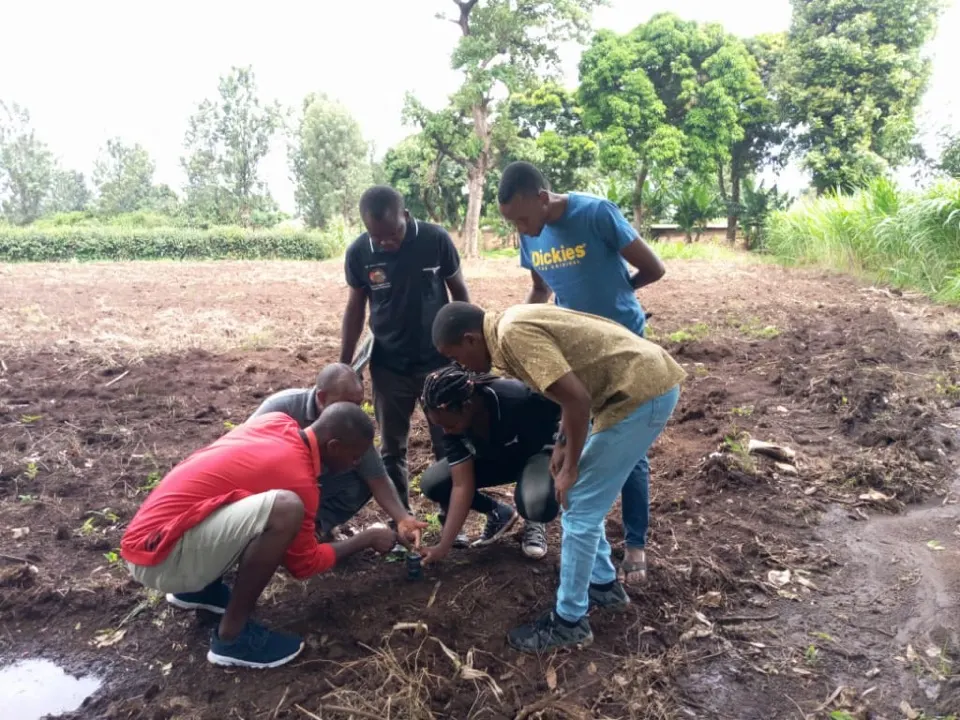
WHAT IS OUR FRIENDS & SUPPORTERS SAYING...
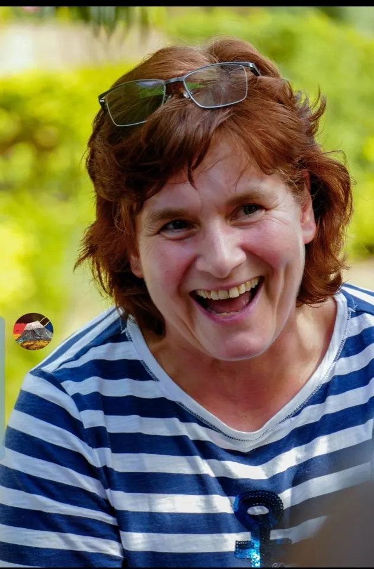
Bettina Achenbach
Owner and Marketing Manager, Achenbach Winery, Wonsheim (Germany)
"I have been in Tanzania (January/February 2020). it is a blessed land and with the group we were opportuned to visit Agri-Connect Tanzania. i have been touched and inspired seeing how much young people are dedicated in working together as a team. I have seen a big effort from all but also Agnes's energy and commitment to help young people is very special. we will support her. For all these you will succeed and when you have suceeded please support others. There so many young people in Tanzania who can be supported by what you are doing. the same love and support Agnes is showing you, you must do the same to others to keep the development circle active and growing" (Bettina)
Beshop Fredrick Shoo
Presiding Bishop of Evangelical Lutheran Church in Tanzania
"Tanzania is a beautiful country with a young population who are under 35 years age. Youth population is about 60% of the whole population. I have come to know the good work done by Agri Connect Tanzania, which seek to raise awareness of young people and to motivate them in discovering their potentials. Agri Connect Tanzania has been successful under the leadership of Agnes Link who I know personally and who is a committed hard working young lady. Not only Agnes is highly committed but also a visionary committed and hard-working young lady. I am aware that through the activities of A-CT young people have managed to form small groups which seek to enable them to realize their potentials and discover opportunities around them for their economic wellbeing. I found this is important as I also believe on the power of togetherness. As a Presiding Bishop of Evangelical Lutheran Church in Tanzania, I highly recommend the activities of A-CT and all approve, national and International Community to support this incredible work that aims for community development. This project needs our support. My support, your support to A-CT makes a great difference in changing the lives of young people. All for community development" (Bishop Fredrick Shoo)
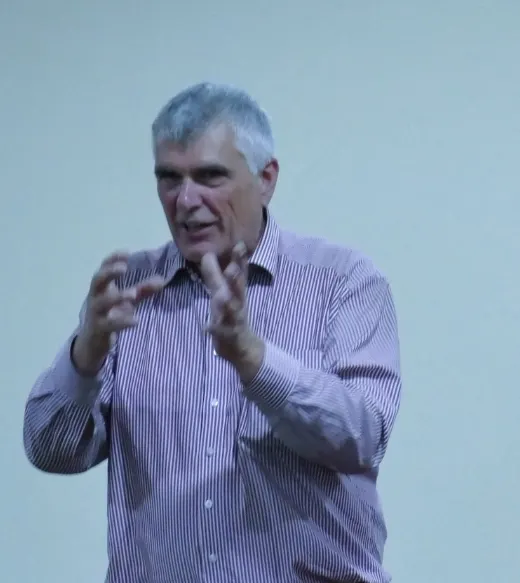
Peter Wighbert
CEO Eucomex AG (Germany)
"I like the project of Agri-Connect Tanzania very much. I have personally spoke to Agnes and visited some of the youth meetings she chaired in Kilimanjaro (Marangu) and one in Shinyanga. I saw what is happening. The project targets the young people to be encouraged and supported by education and resource provision to make a positive change in Tanzania. It feels to me this is a very good approach to bring a positive change. I will promote Agri-Connect in Germany and to all people who are looking to support and help in a direct way. Let us join hands together and support this vision" (Peter)
Learn from the idea which has come at a right time, to the right group of people
Join Agri-Connect Tanzania on our movement towards community development. Join us and start building up the most wanted production and creativity arround your environment today. We make sure we all go through the process of "Kijana kujiwezesha, vijana kuwezeshana na Vijana kuwezeshwa. We are in life times whereby creativity and innovation is the key of our productive and efficient hard working towards our stable self independence towards community development.
Working hours
Monday- Friday: 8:00-15.30 Hrs \ (Phone until 15-30 Hrs)\ Saturday - 8:00-12:00
We are here
Mailisita Moshi, \ P. O. Box 614\ Kilimanjaro Region - Tanzania \ Email: agnesier@yahoo.com\ Phone:\ Fax: